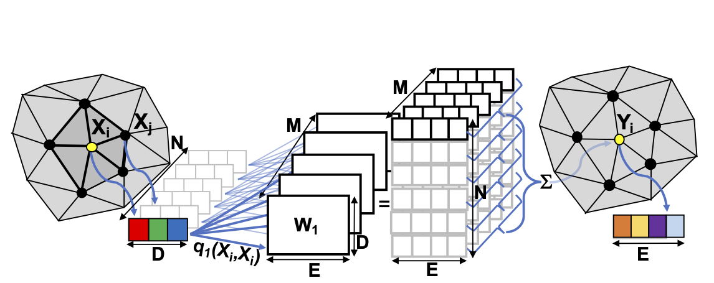
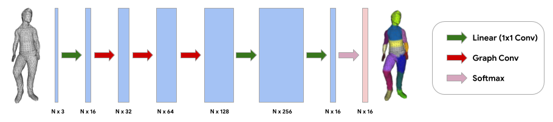
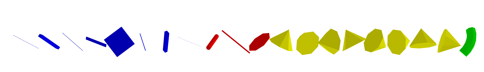
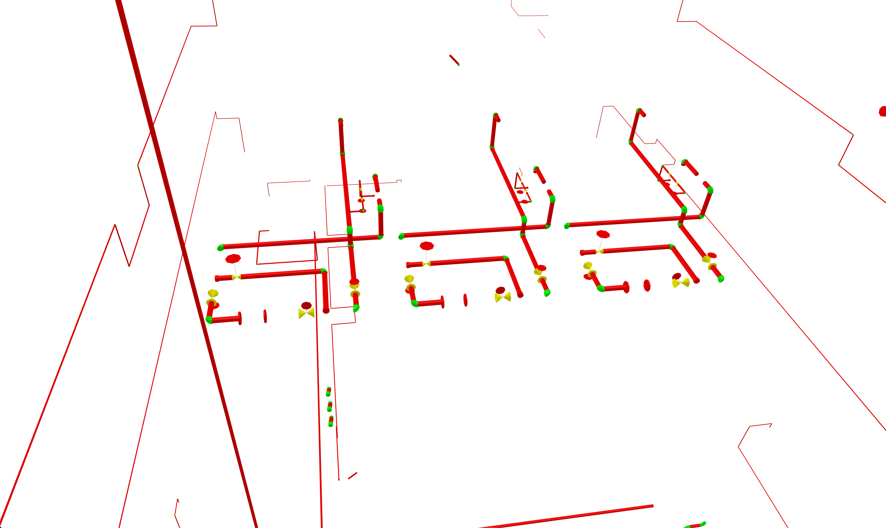
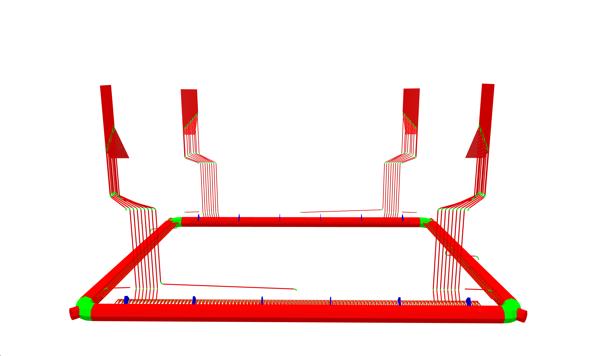
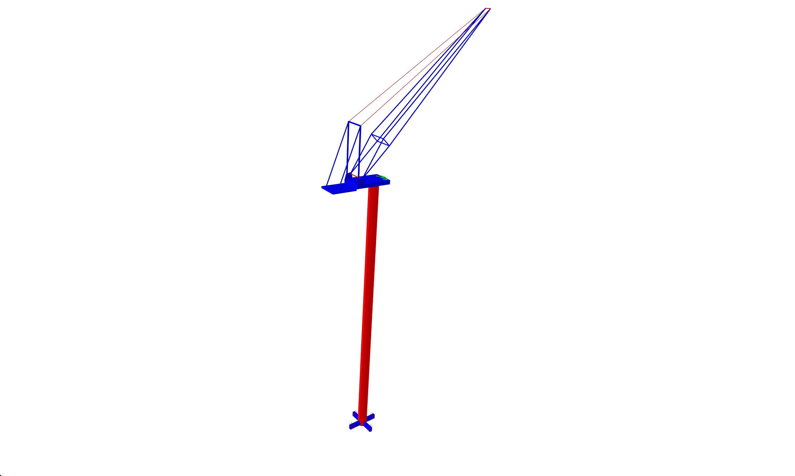
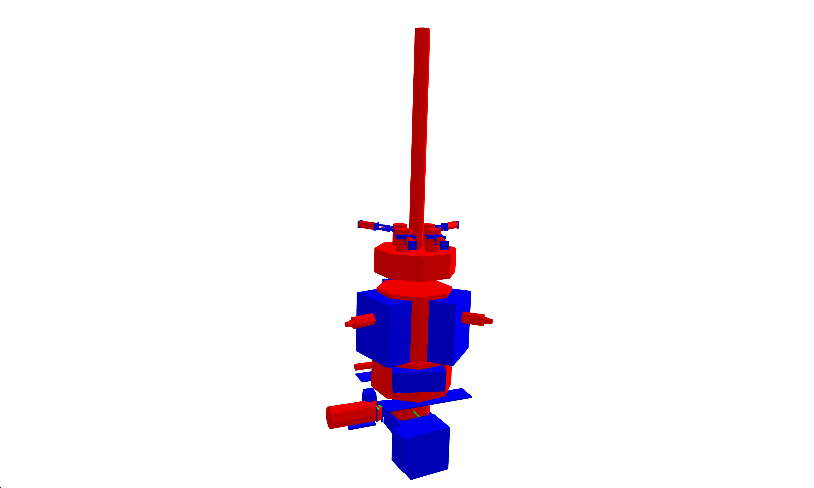

Wallas H. S. Santos
IMPA - i3d20 July 2020
Reversing Engineering using Deep Learning on CAD Models
Introduction
On CAD models complex structure can be modeled by combining simple geometry primitives like cubes, cylinders, etc (see Figure 1). When using this approach, models can be more compact than using generic polygon mesh. Moreover, systems can explore this feature to improve the rendering pipeline and provide smooth navigation. However, it is not always possible to have this representation due to the lack of format standardization, obsolete models, bad design, etc.
In this work, we propose to address the problem of reverse engineering on CAD models. The main goal is to use mesh segmentation using deep learning to extract common geometries on such models.
 Figure 1. Left: An original rendered image from a CAD model of a Refinery.
Right: The same scene but geometries of the same are using the same colormap..
Figure 1. Left: An original rendered image from a CAD model of a Refinery.
Right: The same scene but geometries of the same are using the same colormap..
Feature-Steered Graph Convolutions
The 2D convolution operation has been successfully used to extract local features on images to solve different problems of computer vision. Its construction is simple due to the structure of the image where the pixels are arranged in a regular grid. However, for other types of data structures, an analogous approach is not straightforward, for instance, on polygon meshes, extract features based on their vertices is challenging since they can have a variety of degrees. In this context, the feature-steered graph convolution was proposed to fill this gap [1].
Let \(x\) a input feature and \( y \) an output feature to vertex, where \(D\) and \(E\) are input feature space and output feature space, \( x \in \rm I\!R^D \) and \( y \in \rm I\!R^E \); \(M\) a set of weight matrices, where \(W_m \in \rm I\!R^{D \times E} \)'; and \(\mathcal{N}\) the set of neighbors of vertex \(i\), the following equation give us the output feature for the vertex \(i\):
\( y_i = b + \sum_{m=1}^{M}{\frac{1}{|\mathcal{N}_i|}} \sum_{j \in \mathcal{N}_i}{q_m(x_i, x_j)W_m x_j} \)
The term \(q_m(x_i, x_j)\) is a soft-assignment over a linear transformation of the neighbor \(j\) for a \(m\) weight matrix. The assignment is given by:
\( q_m(x_i, x_j) \propto exp (u^\top_m x_i + v^\top_m x_j + c_m) \),
where \(u^\top_m \), \(v^\top_m\), and \(c_m\) are parameters of the linear transformation. To make the operation translation invariant, we can set \( u_m = - v_m \), therefore we get:
\( q_m(x_i, x_j) \propto exp (u^\top_m (x_j - x_i) + c_m) \)

Figure 2. Graph convolution illustration [1].
Implementation
We implemented the proof of concept using tensorflow-graphics based on the Colab [2]. Figure 3 depicts the architecture, we use the same in our implementation with only changing the number of output classes. The source code available in [3].

Figure 3. Neural network architecture for mesh segmentation of human body parts.[2].
We trained the neural network to classify the following classes:
Dataset
We built a dataset with the target geometries. We generated a set of labeled meshes into a single sample as tf.Example, and stored those examples into a tf.data.TFRecordDataset. It is important to balance the dataset, since for each type of geometry, the number of vertices can vary, and the evaluation can be biased by the geometry type with more vertices in the sample. For instance, a torus needs more vertices than a cube. Therefore, for each example, we added more geometries with fewer vertices to balance the example.

Figure 4. A sample from the dataset. Cubes are blue, cylinders are red, cones are yellow and the torus is green. Note the different amounts of geometries to balance the number of vertices. The geometries were horizontally aligned for better visualization.[2].
Results
In the training phase, the moded achieved 100% accuracy for 30000 samples for training and 500 samples for testing. However, this good result due to the training set is not exhaustive and may fail in other scenarios.
Finally, we tested the model with a few samples of the PowerPlant Dataset [3], which is a model that contains modeling features that we are interested in this work. The geometries of the model are stored as PLY files.
Figure 5. shows the results on the samples of the PowerPlant. Important Note: The model segmentation is not applied to the polygon mesh directly. We split the mesh using face connectivity, transform to the origin and scale each part to a "safe" size (that we found experimentally, based on the scale of the dataset in [2]). Then the model is applied elementwise, however, the output is per vertex. This limitation is due to a possible bug in the current implementation of Feature-Steered Graph Convolutions in tensorgraphics. During the development, the convolutions in the meshes were generating NaN (not a number) values when the triangles have arbitrary translations and sizes.




Figure 5. Results of the segmentation applied on the PowerPlant Dataset [3].
Source Code
References
[1] Verma, Nitika, Edmond Boyer, and Jakob Verbeek. "Feastnet: Feature-steered graph convolutions for 3d shape analysis." Proceedings of the IEEE conference on computer vision and pattern recognition. 2018.[Link]
[2] Mesh Segmentation Colab [Link]
[3] PowerPlant Dataset [Link]